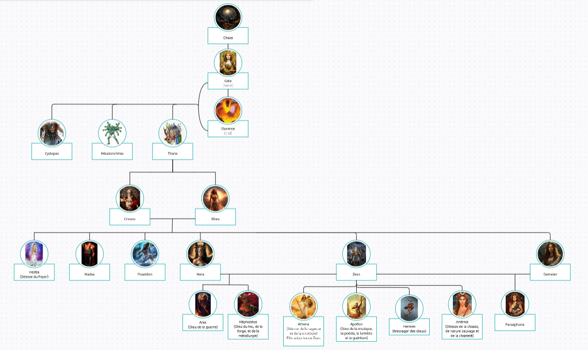

Année 2 - Compétence 6 : Situer son rôle et ses missions au sein d’une équipe informatique
Non acquis
En cours d'acquisition
Acquis
Avoir omis de suivre le planning
Prend mal en note le compte rendu de l'activité
Suivre le planning sans omettre d'information
Oublier de prendre en note les activités
Suivre le planning, mais omettre certaines activités
Rendre correctement compte des activités
Manquer d'ambition concernant l'enrichissement de ses connaissances
Manque d'approfondissement des connaissances
Savoir utiliser sa culture générale au moment opportun et enrichir ses connaissances
Ne pas mettre en avance ses compétences
Mettre en avance certaines de ses compétences, mais de façon non habile et non efficace
Mettre en avant ses compétences sur son CV et autres documents communicatifs
Tableau de compétences
Non acquis
En cours d'acquisition
Acquis
Montre une compréhension limitée de la mythologie grecque, des dieux, des héros et des récits
Comprend les grands principes de la mythologie grecque, mais pas les détails. Peut avoir des lacunes
Possède une connaissance appronfondie de la mythologie grecque, des différentes divinités, des mythes et des récits associés
Exemple
Arbre généalogique de la mythologie grecque
Pour atteindre mon objectif, j'a iécouté des podcasts sur ce thème, puis j'ai réalisé un arbre généalogique (non exhaustif) en essayant d'y intégrer chacun des personnages principaux des podcasts

Arbre généalogique (non exhaustif) de la mythologie grecque
Montre une compréhension limitée des principes fondamentaux du dessin et une pratique insuffisante, et/ou n'essaie pas de nouvelles techniques
Essaie de nouvelles techniques, mais ne parvient pas à les maîtriser tout à fait
Possède une connaissance appronfondie des principes du dessin, et démontre une pratique régulière et compétente
Ne suit pas le planning
Suit globalement le planning, mais omet certains jours/ certaines pratiques
Suit parfaitement le planning, et suit les techniques imposées
Exemple
Exemples de dessins réalisés lors du challenge 1 dessin par jour pendant 1 mois
Au cours de ce challenge, j'ai dû dessiner tous les jours pendant 1 mois. Ce défi vise à renforcer la créativité, et aide à l'apprentissage de certaines techniques artistiques. Voici quelques exemples de mes réalisations :